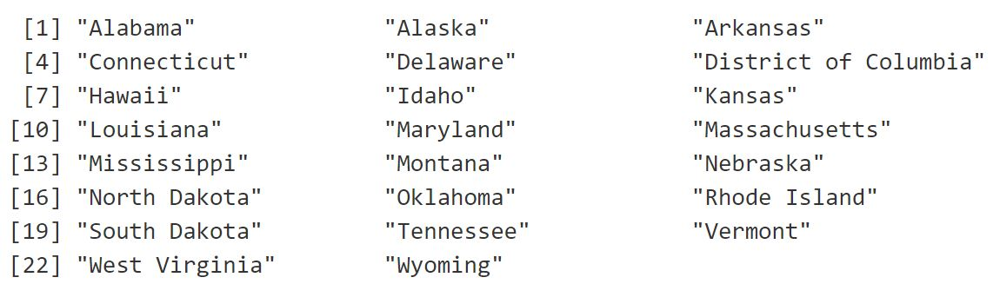

April 5, 2017
library(RSelenium) # parsing dynamic web content
library(rvest) # scraping
library(tidyverse) # data cleaning and ggplot2 - tidy!
library(stringr) # string manipulation
library(plotly) # interactive visualization
library(ggalt) # visualizationExit-polling data is typically considered as the most informative data source for revealing the election day process, as it is well studied and used for announcing presidential election prediction. Another interesting aspect of the exit-polling data is that the statistics based on the questionair reflects the state-level public opinions on certain topics, which could be used as state-level public sentiment features or proxies for future analyses and modeling. It also could give great insights for future campaingn strategies. Thus, it is of great values to collect and analyze the Exit-Polling data. The end goals of my project are to collect the exit-polling data to enrich the Open Election dataset, as well as to visualize and discover the patterns and differential factors that drive/dampen the votes.
To collect the exit-polling data, after some research, there are only two main data sources online that published relatively detailed and state-wide exit-polling aggregated statistics: CNN and FOX NEWS. Actually, it seems their statistics are identical. Anyways, I chose to scrape data on the CNN website. However, the website is dynamically generated, which means the content doesn’t appear on the page source. It definitely makes the scraping more challenging. The workaround is to use a web driver to load and parse the dynamic content automatically. Here I use the RSelenium package for the parsing and rvest to extract relevant information.
rD <- RSelenium::rsDriver(browser = "chrome", verbose = FALSE)
remDr <- rD[["client"]]The scraper function encapsulates the steps to scrape from the webpage and store the data in a tidy format.
getExitPoll_df <- function(webpage){
html <- read_html(webpage)
# get the question topics
questions <- html %>% html_nodes(".exit-poll-table") %>% html_nodes(".exit-poll__question") %>% html_text()
# assign the unique identifier
questions_id <- 1:length(questions)
# get the response items
responses <- html %>% html_nodes(".exit-poll-table") %>%
html_nodes(".exit-poll__table")%>%
html_table() %>% map(., function(x){
colnames(x)[1] <- 'options'
x %>% mutate( Clinton_perc = as.integer(str_extract(Clinton, '[:digit:]+')),
Trump_perc = as.integer(str_extract(Trump, '[:digit:]+')),
Others_Unknown_perc = 100-Clinton_perc-Trump_perc
)} %>% select(options, Clinton_perc, Trump_perc, Others_Unknown_perc))
# get the percentage for each option in a question
options_perc <- html %>% html_nodes(".exit-poll__answer-pct-value") %>% html_text() %>%
str_extract('[:digit:]+') %>% as.integer()
# get the number of respondents
num_respondents <- html %>% html_nodes(".exit-poll-table") %>%
html_nodes(".exit-poll-table__metadata") %>% html_text() %>% map_int(function(x)
as.integer(str_extract(x,'[:digit:]+')))
# integrate the data
state_df <- cbind(questions_id, questions, num_respondents, responses) %>% as_tibble() %>%
mutate(questions_id = unlist(questions_id), questions = unlist(questions), num_respondents = unlist(num_respondents)) %>%
unnest(responses) %>% mutate(options_perc = options_perc) %>% mutate(options = map2_chr(options, options_perc, function(x,y) str_replace(x, paste0(y,'%'), '')))
state_df
}We will start from the home page that shows the nationwide exit polling statistics.
nationwide_url <- "http://www.cnn.com/election/results/exit-polls"
remDr$navigate(nationwide_url)
page_source <- remDr$getPageSource()
webpage <- page_source[[1]]Here is the glimpse of the nationwide exit polling statistics. It’s in a tidy format! There are 55 questions while some questions related to demographics are somewhat duplicated.
nationwide_df <- getExitPoll_df(webpage)
head(nationwide_df)Then we want to collect a list of urls for different states.
states <- read_html(page_source[[1]]) %>% html_node('.select__select') %>% html_children() %>% html_text()
states_urls <- sapply(states, function(s) paste('http://www.cnn.com/election/results/exit-polls', str_replace(tolower(s),' ', '-'), 'president', sep = '/'))Let’s run it through our collection list.
exit_poll_df <- tibble(state = states[-1], url = states_urls[-1])
state_dfs <- list()
for(i in seq_along(exit_poll_df$url)){
link <- exit_poll_df$url[i]
possibleError <- tryCatch({
print(paste("Scraping ", exit_poll_df$state[i]))
remDr$navigate(link)
Sys.sleep(3) # set sleeping time for loading
page_source <- remDr$getPageSource()
Sys.sleep(2)
webpage <- page_source[[1]]
state_dfs[[i]] <- getExitPoll_df(webpage)}, error = function(e) e
)
if(inherits(possibleError, "error")){
print(paste("No available exit polling data for ", exit_poll_df$state[i]))
state_dfs[[i]] <- data.frame()
}
}
# close the Selenium server
remDr$close()
rD[["server"]]$stop()It turns out on the CNN website, there are only 28 states with exit-polling data online. Also, it seems most states missing exit-polling data are red states. This makes the nationwide exit-polling statistics less credible.
exit_poll_df$state_df <- state_dfs
exit_poll_cleaned_df <- exit_poll_df %>% unnest(state_df)
cat("No available exit-polling data in the following states:\n")
setdiff(exit_poll_df$state, exit_poll_cleaned_df$state) 
We want to save the combined dataset with the nationwide aggregated data.
nationwide_df$state = "nation"
nationwide_df$url = "http://www.cnn.com/election/results/exit-polls/national/president"
nationwide_df$options_perc = as.integer(nationwide_df$options_perc)
exit_poll_cleaned_df$options_perc = as.integer(exit_poll_cleaned_df$options_perc)
all_exit_poll_df <- bind_rows(nationwide_df, exit_poll_cleaned_df)
write_csv(all_exit_poll_df, 'exit_polls_data_cnn_04022017.csv', col_names = T)Note that the cleaned and tidy format of exit polling data is also publically available on the Data for Democracy github and my data.world profile.
With this “tidy” exit-polling data, we are ready to do some interesting analysis and visualization. Let’s focus on a few key questions.
Trump is often labeled as a politics disrupter by the media. I’m espeially curious about how his image roots in the electorates’ minds for different states. First, we can look at the distributions of responses across states. From the graph below, it shows the poorer the state is, the larger percentage the option of “Can bring change” is chosen. Missouri and Kentucky are the states with the highest percentages of choosing “Can bring change” and the lowest percentages of choosing “Right experience”.
exit_poll_cleaned_df <- read.csv("exit_polls_data_cnn_04022017.csv")
p <- exit_poll_cleaned_df %>% filter(questions == 'Which candidate quality mattered most?') %>% ggplot(aes(x = state, y = options_perc, fill = options)) + ggtitle('Distribution of Candidate Quality Responses by State, In Percentage') + geom_bar(stat="identity") + coord_flip()
ggplotly(p)The nationwide statistic says about \(39%\) of U.S citizens chose the quality of “can bring change” matters the most. I also created the Dumdbell chart to show the contrasts in terms of the percentage of supporting rate in the “Can bring change” option for various states. Clearly, among the people who chose “Can bring change”, Trump has much greater favors, especially in red states, which is obvious.
cbc_plot_df <- exit_poll_cleaned_df %>% filter(questions == 'Which candidate quality mattered most?', options == 'Can bring change')
cbc_plot_df$state <- factor(cbc_plot_df$state, levels = cbc_plot_df$state[order(cbc_plot_df$Trump_perc)])
p <- plot_ly(cbc_plot_df, color = I("gray80")) %>% add_segments(x =~Clinton_perc, xend =~Trump_perc, y = ~state, yend=~state, showlegend = FALSE) %>% add_markers(x=~Clinton_perc, y = ~state, name = "Clinton", color = I("blue")) %>% add_markers(x = ~Trump_perc, y = ~state, name = "Trump", color = I("red")) %>% layout(title = "Which candidate quality mattered most? Can he/she bring change?", xaxis = list(title = "Percentage of supporting rate(%)"), margin = list(l =150), yaxis = list(ticklen = 5, tickwidth =2)
)
p# or go to https://plot.ly/~mrapple/93/which-candidate-quality-mattered-most-can-heshe-bring-change/Obviously, Economy is the biggest concern for every state. It would be interesting to further check whether the electorate in the republican winning states also favor Trump for addressing their economy concern.
p <- exit_poll_cleaned_df %>% filter(questions == 'Most important issue facing the country') %>% ggplot(aes(x = state, y = options_perc, fill = options)) + ggtitle('Distribution of Important Issue Responses by State, In Percentage') + geom_bar(stat="identity") + coord_flip()
ggplotly(p)The nationwide statistic says about \(52%\) of U.S citizens chose the “economy”" as the most important issue. It’s interesting to see that most of states do favor Clinton who is more capable to address the economy issue, even for republican states like Texas and Florida, and also for the surprising tipping states like Minesota and Michigan. Utah and California appears to have the most dramatic contrasts. However, note that the conclusion drawed here is just based on the available data and without considering error margins.
economy_plot_df <- exit_poll_cleaned_df %>% filter(questions == 'Most important issue facing the country', options == 'Economy')
economy_plot_df$state <- factor(economy_plot_df$state, levels = economy_plot_df$state[order(economy_plot_df$Trump_perc)])
p <- plot_ly(economy_plot_df, color = I("gray80")) %>% add_segments(x =~Clinton_perc, xend =~Trump_perc, y = ~state, yend=~state, showlegend = FALSE) %>% add_markers(x=~Clinton_perc, y = ~state, name = "Clinton", color = I("blue")) %>% add_markers(x = ~Trump_perc, y = ~state, name = "Trump", color = I("red")) %>% layout(title = "Which candidate can address the Economy issue", xaxis = list(title = "Percentage of supporting rate(%)"), margin = list(l =150), yaxis = list(ticklen = 5, tickwidth =2)
)
p#chart_link = plotly_POST(p, filename="econmoy-issue-dumbell-plot")
#or go to https://plot.ly/~mrapple/97/which-candidate-can-address-the-economy-issue/Here I just briefly went through the process of collecting the exit-polling data and discussed some examples to analyze the data. However, I’m sure there are more interesting insights that can be discovered and visualized by analyzing the exit-polling dataset, like “what are the sentiment predictors(survey questions) significant to the election outcome”.
Although there has been some reports to analyze the exit-polling data, such as this, they mostly focused on the nationwide statistics, which could be biased and easy to fall into the ecological fallency when intepretating the correlations. Due to the electorate college system, it makes more sense to aggregate data and analyze at the state level. On the other hand, as we mentioned before, the exit-polling data is not yet comprehensive for missing the statistics from the other 23 states/districts. So hopefully the exit-polling data would be updated and publicly available soon.
I plan to continue the analysis for the exit-polling data in future because of my interest in US politics and government.
Since there are a lot of nuances when applying data science into political analysis, I could make some mistakes in intepretation. So any review or suggestion would be greatly appreciated.